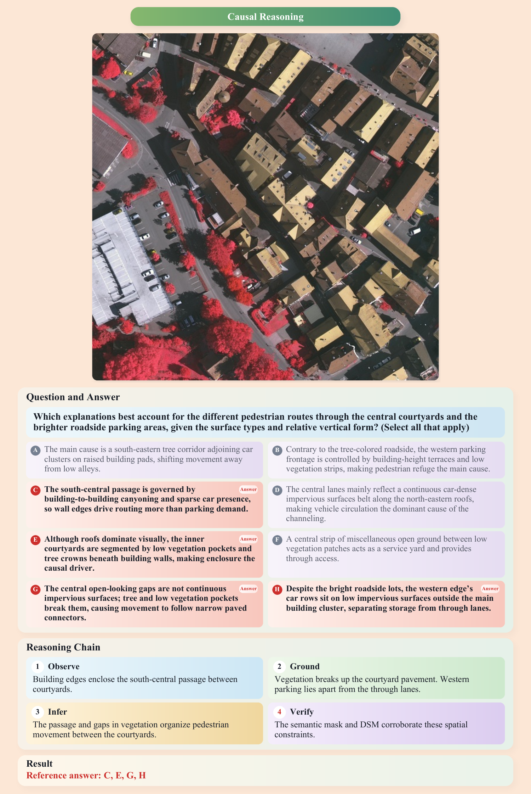
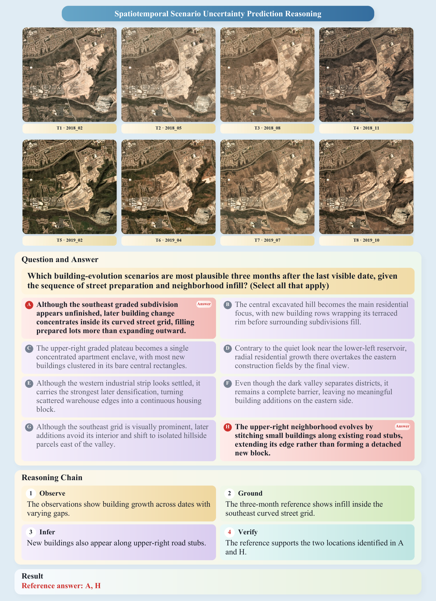
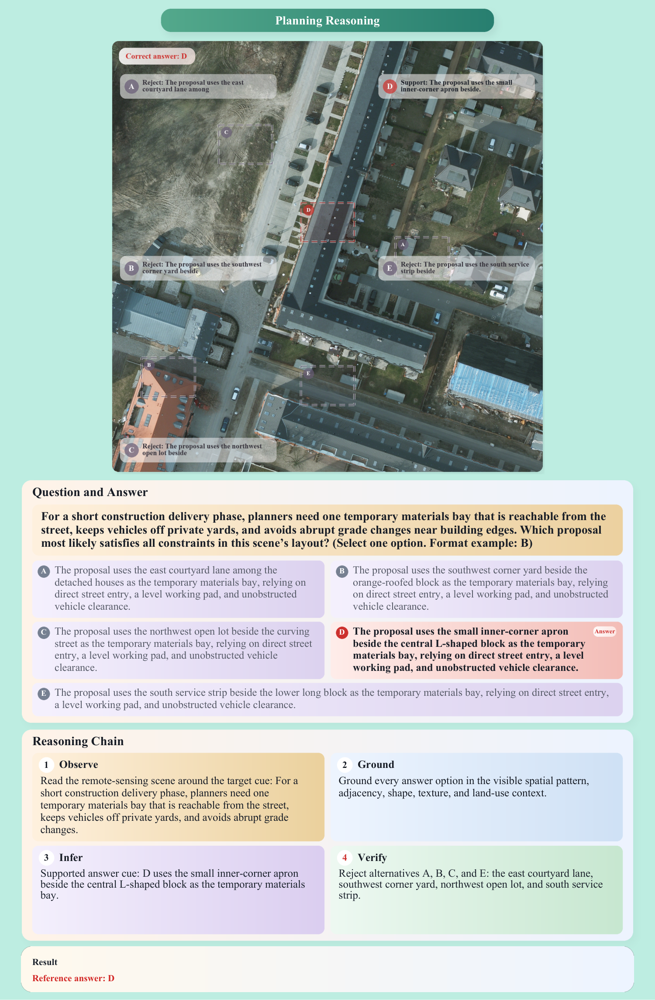
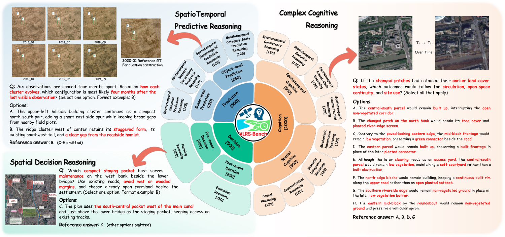
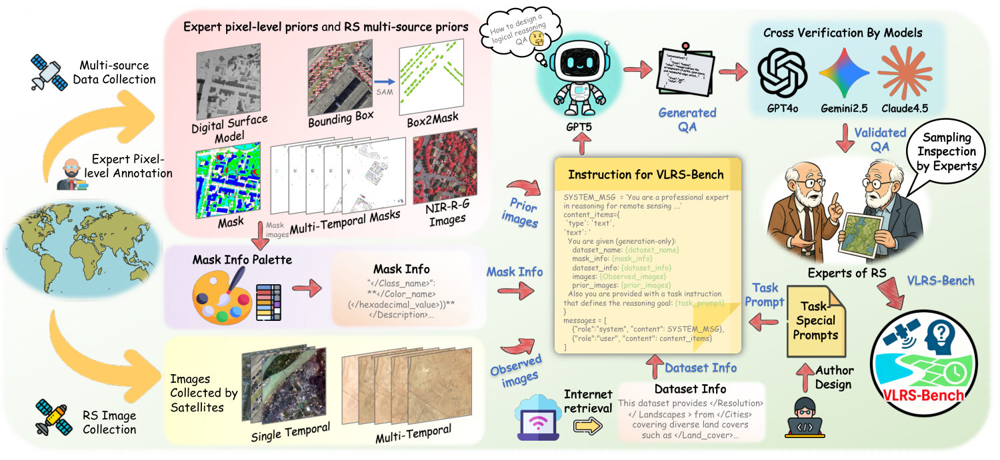

01 WHY IS THIS?
Cognition
Explain spatial patterns, mechanisms, counterfactuals, and causal chains across time.
8 tasks · 2 ability groupsView case ↗
Vision · Language · Remote Sensing
VLRS-Bench asks what multimodal models can explain, decide, and predict from remote sensing imagery—not only what they can recognize.
A Vision-Language Reasoning Benchmark for Remote Sensing

01 / The question
Remote sensing benchmarks often ask models to recognize objects or classify scenes. Real decisions about places also require causal explanations, plans that respect spatial constraints, and forecasts grounded in change over time.
VLRS-Bench organizes these demands into a three-level reasoning framework: three dimensions, six ability groups, and fourteen tasks. Its 2,000 questions span four answer formats and draw on ten public remote sensing datasets.
Explore the reasoning framework02 / Three dimensions
Each dimension tests a different part of geospatial reasoning. These examples are drawn from the paper.

Explain spatial patterns, mechanisms, counterfactuals, and causal chains across time.

Choose a spatial plan or assess a proposal against the constraints visible in a scene.
Forecast object and scene evolution from dated observations, including uncertain futures.
The complete framework
The paper’s overview connects the three reasoning dimensions to six ability groups and their fourteen individual tasks.

03 / How it is built
The construction pipeline uses information specific to Earth observation to create reasoning questions, then checks each candidate before release.

Single-date and multi-date imagery from ten public remote sensing datasets.
DSM, near-infrared imagery, expert masks, timestamps, and dataset context inform question design.
Automated checks, model cross-verification, and remote sensing expert review select the final 2,000 items.
04 / What the experiments reveal
Across evaluated models with available format-level results, single-choice and true/false questions score much higher on average than multi-choice and fill-in-the-blank questions.
The paper also finds that models struggle with causal mechanisms, spatial planning under constraints, and forecasting scene-level change. A single overall score can hide these different weaknesses.
Read the analysis in the paperReported averages in the paper for evaluated models with a QA-format breakdown. Formats use different scoring rules; see the paper for the full evaluation protocol.
Why VLRS-Bench
Three dimensions, six ability groups, and fourteen tasks expose strengths and weaknesses beyond a single score.
Task construction draws on elevation, near-infrared imagery, annotated masks, and dated observations.
Automated filtering, model checks, and expert review screen candidates for visual grounding and logical quality.
05 / Continue exploring
Start with the full study, inspect the released benchmark, or run the open evaluation script.
Citation · NeurIPS 2026
@inproceedings{luo2026vlrsbench,
title = {VLRS-Bench: A Vision-Language Reasoning Benchmark for Remote Sensing},
author = {Luo, Zhiming and Wang, Hebaixu and Guo, Haonan and Zhang, Jing and Du, Bo},
booktitle = {Advances in Neural Information Processing Systems},
year = {2026},
note = {Evaluations and Datasets Track},
url = {https://neurips.cc/virtual/2026/poster/139821}
}